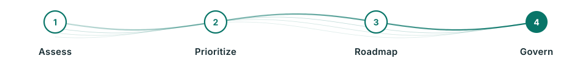

Cybersecurity & Digital Trust
Cybersecurity and digital trust consulting for organizations reducing business risk
We help organizations define cybersecurity strategy, assess risk, design governance, and prepare for cyber resilience.

Expected Outcomes
This service helps organizations clarify direction, measure outcomes, and scale execution.
- Risk-based cybersecurity roadmap
- Security governance, policy, and compliance aligned with ISO 27001, NIST, and PDPA
- Incident response readiness and executive cyber metrics
- Third-party and supply chain security risk visibility
Best Fit
Built for organizations that need cybersecurity risk reduction connected to business priorities, not isolated checklists
We translate technology risk into executive decisions with roadmaps, governance, and metrics that leaders can act on.
- Need cyber maturity and gap assessment against ISO 27001, NIST, or PDPA to prioritize investment
- Critical systems, partners, or sensitive data require stronger controls and incident readiness
- Executives need simple cyber metrics that reflect business risk
How We Help
From unclear problems to executive-ready decisions and action plans
Engagements can start with a focused assessment or workshop, then expand into roadmaps, governance, and delivery oversight based on organizational readiness.
Cyber Risk Assessment
Assess risk from assets, processes, controls, third parties, and business impact to prioritize remediation.
Security Governance
Design policies, committees, RACI, control ownership, and governance cadence for clear coordination.
Cyber Resilience Readiness
Review incident response, tabletop scenarios, backup and recovery dependencies, and executive communications.
Compliance Roadmap
Create a roadmap that connects ISO 27001, NIST, PDPA, and business requirements into an execution plan.
Our Approach
Structured work that creates clarity quickly and leaves practical assets for the team

- 1
Assess
Gather business context, critical systems, current controls, and the threat and risk landscape.
- 2
Prioritize
Prioritize gaps by likelihood, impact, compliance pressure, and team readiness.
- 3
Roadmap
Design quick wins, target controls, governance, and investment roadmap.
- 4
Govern
Define metrics, owners, and review cadence for executives and operational teams.
Typical Deliverables
Practical assets that help teams move forward, not just summary reports
Each engagement can be scoped to fit timeline, budget, and organizational readiness.
- Cyber maturity and risk assessment
- Risk-based security roadmap
- Governance model and RACI
- Incident response readiness plan
- Executive cyber risk dashboard
FAQ
Frequently Asked Questions
How does Cybersecurity Consulting help an organization?
It translates technical risks into risk management plans, policies, standards, and roadmaps that support executive decisions.
How does Cyber Resilience differ from Cybersecurity?
Cybersecurity focuses on prevention and risk controls. Cyber Resilience focuses on the ability to respond, recover, and maintain critical services during an incident.
Should we start with ISO 27001 or NIST?
It depends on the organization’s objectives. ISO 27001 can be a starting point when certification is the goal, while NIST provides a useful framework for a flexible maturity roadmap.